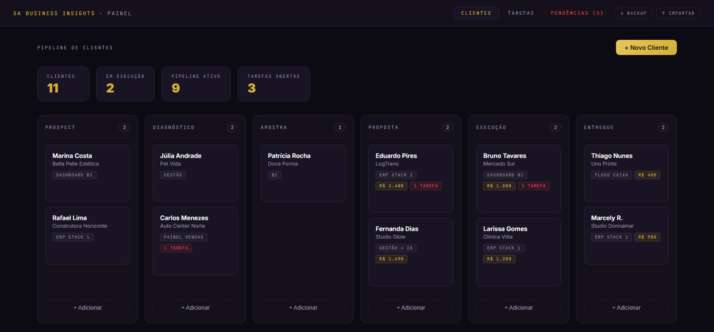

Seu painel, agora multi-cliente — estável e dentro do escopo.
Cada cliente vê só os dados dele. Sua equipe mantém a visão admin completa. Construído sobre a base atual, sem reescrever o que já funciona.
A entrega, em 3 marcos — exatamente os seus
Marco 1
Login & acesso
Login seguro com senha por cliente e permissões rigorosas. Isolamento no nível do banco — cada cliente só enxerga o que é dele, sem depender de filtro no front. Equipe interna com visão administrativa total.
Marco 2
Painel & filas operacionais
Métricas que importam e leads com filtro por cliente, perfil, período e status. Filas de acompanhamento de agentes e SDRs: pendente, em andamento, sem resposta e o que exige ação imediata.
Marco 3
Exportação & produção
Exportação de dados em CSV, acompanhamento por perfil de LinkedIn, testes do fluxo completo, ajustes finais e subida à versão definitiva em produção.
Li seu projeto inteiro. A prioridade é clara: funcional, objetiva e estável, sobre a base que já roda — sem inflar com o que não foi pedido. É assim que eu trabalho: entrego os 3 marcos no combinado, e qualquer ideia nova entra como fase à parte, nunca empurrada pra dentro do escopo.
Desenho de soluçãoProva · garantias · valor
Painel operacional que já construí
Painel de controle que montei do zero: resumo, kanban de leads por etapa, filtros e filas com tarefas pendentes. É o mesmo motor do seu Marco 2 — só passa a ser multi-cliente:
painel operacional · pipeline e filas

Duas garantias que importam aqui
Isolamento de verdade
Separação por cliente feita na regra do banco, não no front. Um cliente nunca alcança o dado do outro — nem trocando a URL. É o que sustenta o multi-cliente.
Continuidade da base
Trabalho sobre o que já existe: leio o painel atual, preservo o que funciona e evoluo em cima. Sem reescrita, sem quebrar o que sua equipe já usa.
BI + escopopainel que decide, entrega no combinado
Sou analista de BI: painel operacional é meu carro-chefe — métricas, filas e filtros que mostram onde agir. E entrego com disciplina de escopo: os 3 marcos, estáveis, sobre a sua base. Comunicação direta e prazo respeitado.
Me dá acesso pra eu olhar a base atual?Com o painel e a stack em mãos, te devolvo o plano dos 3 marcos com prazo por marco.